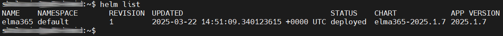

Diagnostics can be used to determine the current state of the system, eliminate existing errors, and optimize performance.
The diagnostic and troubleshooting process consists of three steps:
- Collecting diagnostic information.
- Applying new parameters for BRIX Enterprise.
- Generating logs and checking the status of services.
Please note that during the diagnostic and troubleshooting process, changes are made to the existing configuration file values-elma365.yaml, which is received and filled in when BRIX Enterprise is installed. Unintentional changes to parameters in this file may result in the loss of BRIX application functionality.
начало внимание
Before making changes to the values-elma365.yaml file, it is recommended to create its backup copy.
конец внимание
If the values-elma365.yaml file has been lost, retrieve the parameters of the current BRIX installation and save them to this file. To do this, execute the following command:
helm get values elma365 [-n namespace] > values-elma365.yaml
Step 1: Collecting diagnostic information
To collect system state data, enable debugging of the platform. To do this, set the debug parameter to true:
debug: true
Step 2: Applying new parameters for BRIX Enterprise
You can update BRIX application settings in two ways: online or offline.
Update parameters online
- Determine the chart version where the BRIX application was installed or updated:
helm show chart elma365/elma365
Command execution example:

The command will result in the chart version information being specified in the version file. Save this value for the next step.
- Update the BRIX parameters. To do this, execute the following command specifying the installed chart version for the
--versionflag instead of<elma365-chart-version>:
helm upgrade --install elma365 elma365/elma365 -f values-elma365.yaml --version <elma365-chart-version> --timeout=30m --wait [-n namespace]
Update parameters offline
Go to the chart directory where the BRIX application was installed or updated and execute the following command:
helm upgrade --install elma365 ./elma365 -f values-elma365.yaml --timeout=30m --wait [-n namespace]
It takes about 10-30 minutes to update the parameters. Wait for it to complete.
Step 3: Generating logs and checking the status of services
Obtain logs
- If you need to gather logs from all application services, execute the following command:
kubectl logs -l tier=elma365 --all-containers [-n namespace] > logs.txt
- To view logs of a separate service, specify the required service instead of
[name]:
kubectl logs -l app=[name] [-n namespace]
начало примера
Example:
kubectl logs -l app=main -n brix
конец примера
View logs in real time
To monitor logs in real time, add the -f option:
kubectl logs -l app=[name] -f [-n namespace]
начало примера
Example:
kubectl logs -l app=main -f -n brix
конец примера
Check the status of services
To make sure that all services are working correctly, execute the following command:
kubectl get pod [-n namespace]
The result will be generated as a table with the list of services. Services need to be in the Running status, while tasks need to be in the Completed status.
For more detailed analysis, it is recommended to install the necessary monitoring, logging and trace analysis tools.
Found a typo? Select it and press Ctrl+Enter to send us feedback